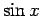
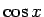
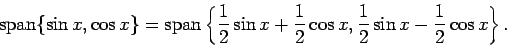
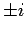
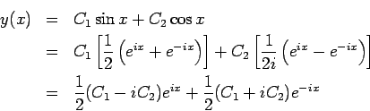

L. F. Rossi
26 November 2001
When solving second order differential equation such as
The correct way to think about it is that once one has one linearly independent set of solutions to an ODE (i.e. a basis), one is free to re-express this basis any way one would like. For (4), I took

and
from (2), and recombined them into another basis. Both bases span the same set of general solutions. That is,
Now we can turn to the mysterious arrival of complex numbers in our
course. Complex numbers first roared to life when we sought solutions
of the form erx in (1). (This is a perfectly good way to
solve constant coefficient ODEs, by the way. Complex numbers should
not scare you away.) The resulting characteristic polynomial is

. Thus, if we knew nothing about sines and cosines, we would write down the general solution seen in (3). In fact, this solution is often more satisfying to students because it came from a rigous procedure whereas the solution involving trig functions comes from an initial guess that the solution will look like a sine or a cosine. Anyway, we know that (2) and (3) span the same general solution space. How can we see this?
The answer comes from Euler's relation
Now, all the pieces fit together. If I start with a general solution
like (2), I can write it as complex exponentials using
(6).

The moral of this essay is that there are infinitely many pairs of linearly independent solutions to (1), and this is a general property of ODEs. It is not enough to know how to solve a problem one way because often the difficulty of a problem is governed by which pair you choose to use. Complex exponentials can be terribly useful as can be trigonometric functions. Master them both, and you will have little to fear from constant coefficient ODEs.